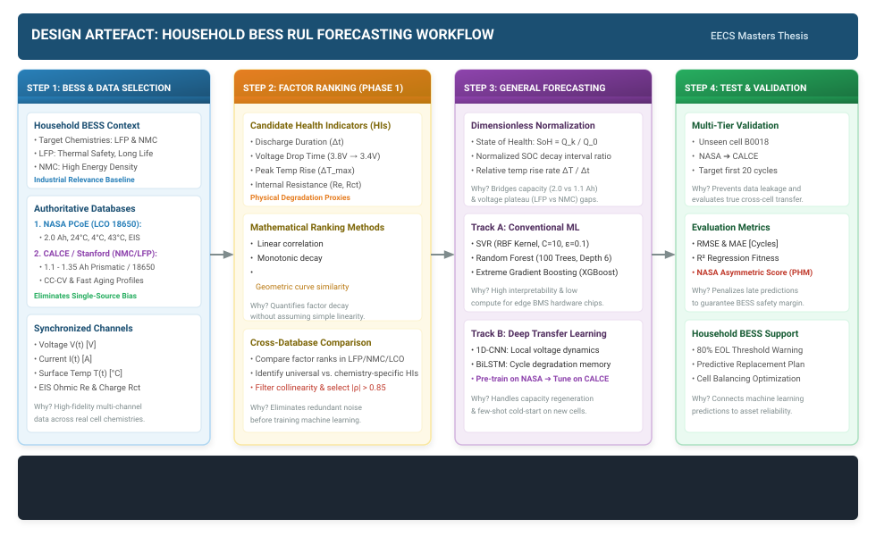
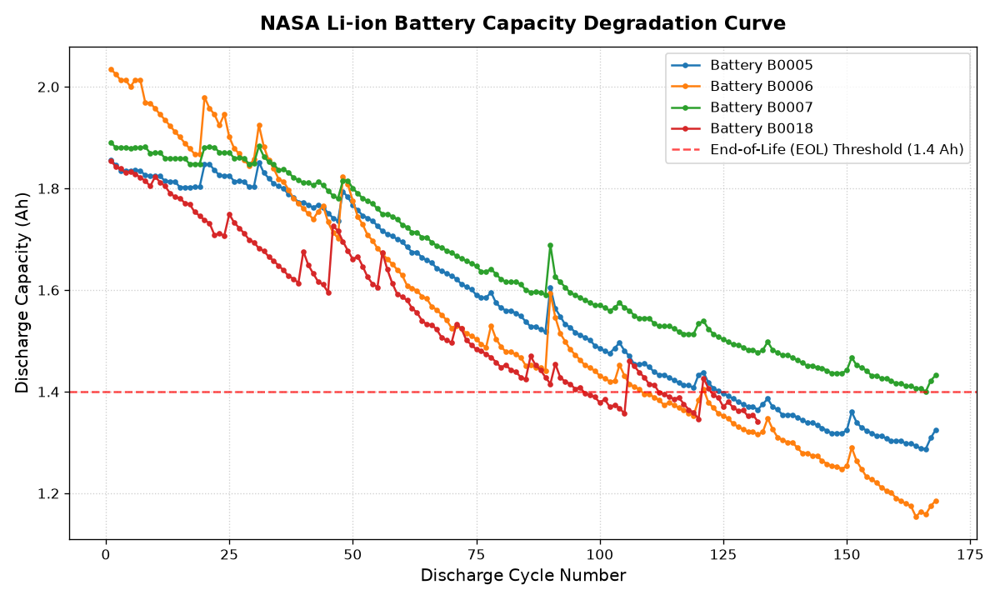

Design Artefact: Cross-Dataset Battery RUL ArchitectureMulti-Source Health Indicator Evaluation & Generalized Forecasting Pipeline
|
Course: EECS Masters Thesis Student: Ryan / Rrydicy Date: Semester 2, 2026 |


uv, PyTorch 2.13, Scikit-Learn 1.9, and automated Jupyter pipelines.This project focuses on developing a universal forecasting model to predict the Remaining Useful Life (RUL) of residential Battery Energy Storage Systems (BESS). In household applications, battery reliability and safety are paramount across diverse commercial chemistries such as Lithium Iron Phosphate (LFP) and Nickel Manganese Cobalt (NMC). However, conventional prognostic approaches are typically tailored to single-source datasets and specific cell types, failing to generalize across varied real-world operating environments. To overcome this limitation, the proposed research establishes a cohesive two-phase workflow designed to bridge disparate data sources and achieve robust, cross-chemistry lifetime forecasting.
The first phase is dedicated to Feature Importance Analysis. In this stage, candidate operational degradation factors—including discharge duration, partial voltage drop intervals, temperature dynamics, and internal resistance—are extracted from multi-source benchmark repositories such as NASA and CALCE. By mathematically evaluating and ranking the impact of these factors, the project builds a rigorous empirical understanding of how different operating parameters govern battery degradation across varied chemistries. Building upon these insights, the second phase focuses on Cross-Dataset Integration and Generalization. This phase aims to eliminate the inherent barriers separating disparate battery datasets by projecting heterogeneous degradation features into a unified, universal feature space, ultimately enabling accurate and chemistry-agnostic RUL predictions.
A key methodological decision in this design is that the specific machine learning (ML) and neural network (NN) architectures, as well as the exact mathematical formulations used to construct the universal feature space, will be determined based on the empirical findings of Phase 1. Evaluating factor rankings across chemistries beforehand prevents premature model commitment and ensures that subsequent predictive modeling is grounded in verified degradation mechanisms. To ensure transparency, reproducibility, and collaborative development, all pipelines and experimental workflows are built using open-source tools (PyTorch and Scikit-Learn) and managed within an already initialized GitHub repository (https://github.com/Rrydicy/Thesis-project-).
The primary technical risk facing this project lies in whether a mathematically robust mapping can be successfully constructed to project disparate dataset characteristics into a shared universal space without sacrificing prediction accuracy. This risk will be addressed through dimensionless health indicator normalization (such as State of Health) and systematically validated through a multi-tier testing protocol spanning in-domain testing, zero-shot cross-dataset evaluation, and few-shot fine-tuning. This design directly guides the forthcoming project milestones, starting with correlation-based factor ranking, followed by universal feature space formulation, model calibration, and the derivation of actionable predictive maintenance recommendations for domestic BESS.